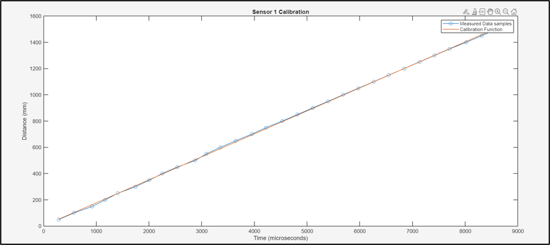
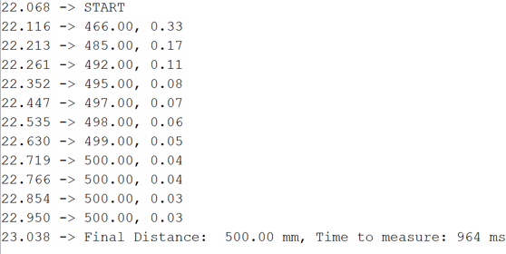
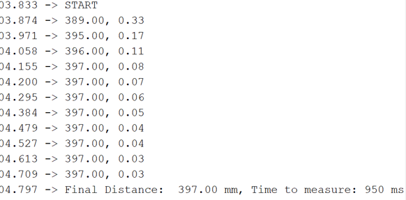
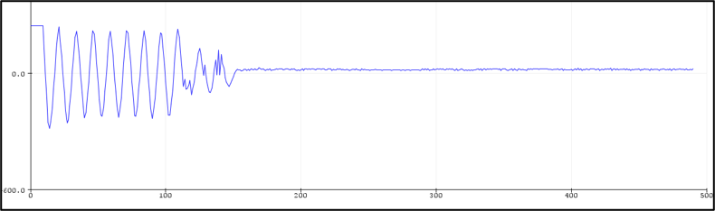
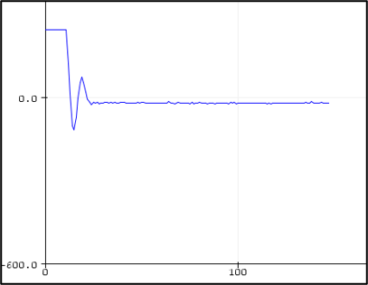

Project overview
This project combined an RC-vehicle distance controller with separate ultrasonic sensor-calibration and fusion experiments. The work examined both closed-loop behavior and the measurement quality needed to support it.
My contribution
- Assembled and programmed the Arduino-based RC-vehicle distance-control prototype.
- Calibrated ultrasonic range measurements and evaluated sequential Kalman-filter updates.
- Tuned the hardware distance controller and explored related state-space formulations in simulation.
Hardware and control setup

The controller used a sensor-distance target of 350 mm, corresponding to approximately 300 mm of front clearance. The report specifies a 12.5 ms control interval.
The final gains were Kp = 1.1, Ki = 0, and Kd = 2.7. Although implemented in a PID framework, these settings provide proportional–derivative control.
Ultrasonic calibration
{kind=link}

Calibration established the conversion from ultrasonic timing to measured range before evaluating filtering and distance-control behavior.
Sequential sensor-fusion study
Two sensors supplied sequential measurement updates to a shared Kalman estimate. Measurements were staggered by 37.5 ms, with a 75 ms period for each sensor, to reduce interference between ultrasonic signals.
| Test distance | Single-sensor convergence | Fused convergence | Fused final reading |
|---|---|---|---|
| 500 mm | 1,949 ms | 964 ms | 500 mm |
| 400 mm | 1,934 ms | 950 ms | 397 mm |
{kind=link}

{kind=link}

The experiments reduced distance-estimate convergence time by approximately 51%. This metric describes the filtering tests; it is separate from the control-loop interval and the complete vehicle response.
Controller tuning and response
{kind=link}

{kind=link}

Hardware testing brought the vehicle close to its target clearance. Measurement noise could still cause traction stop–start behavior, identifying a practical limitation for further refinement.
Results and related work
Separate state-space and LQR studies compared velocity-input and acceleration-input formulations in simulation. An additional wall-distance steering study used a 350 mm lateral target.
The sensor-fusion experiments and these simulation studies were separate from the final hardware distance-control implementation. Together, they developed experience in calibration, estimation, sampling choices, and embedded feedback control.